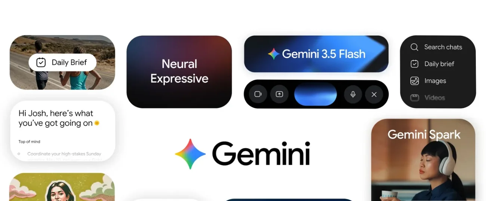
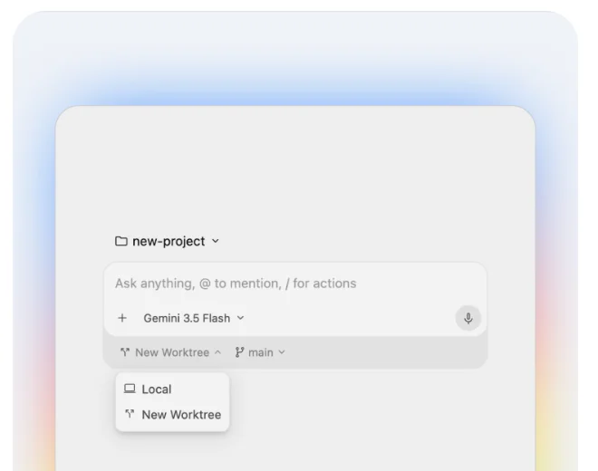
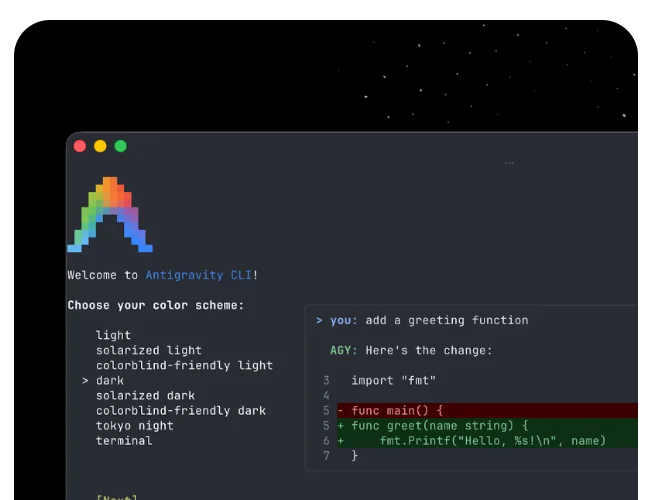

GeminiGoogle
Google 用一个品牌覆盖个人、企业和开发者：Gemini App 有 9 亿多月活和 7×24 小时的个人 Agent Spark，企业版推出“通用工作 Agent”，编程交给 Antigravity 平台。
一页结论
- 用户规模最大的 Agent 入口之一：Gemini App 月活从一年前的 4 亿增长到 9 亿多，覆盖 230 个国家和地区、70 多种语言S1
- 个人 Agent：Gemini Spark：5 月 I/O 发布，基于 Gemini 3.5 和 Antigravity 运行框架，深度接入 Gmail、文档、幻灯片，云端运行、关机不停S1
- 企业 Agent：Gemini agent：10 月 Gemini at Work 发布“单一、通用的工作 Agent”，直接在 Gmail、云端硬盘、文档、表格、日历里干活，内置多模型编排和实时消费上限S2
- 编程统一到 Antigravity：I/O 上 Antigravity 2.0 推出桌面应用、CLI 和 SDK，原 Gemini CLI 并入 Antigravity CLIS4S7S8
- 开发者市场仍在追赶：JetBrains 调研中 Antigravity 工作使用率 6%，但在印度达到 15%，与 Cursor 并列第三S6
01公司介绍
02公司战略
Google 的打法是“一个 Gemini，三个场景”：消费端用 App 和 Spark，企业端用 Gemini agent，开发者用 Antigravity，底层共用模型与 Agent 运行框架。
- 从助手到主动干活的伙伴：Spark 把 Gemini 从“回答问题”变成“替你做事”，Daily Brief 每天主动整理要事S1
- 把 Agent 塞进 Workspace：企业版 Gemini 直接在 Gmail、Drive、Docs、Slides、Sheets、Chat、Calendar 里工作，记忆、技能和管控处处一致S2
- 共用 Agent 运行框架：Spark 运行在 Antigravity 框架上，消费端和开发者产品共享底层能力S1
- 用成本控制打企业市场：多模型编排、智能路由、实时消费上限S2
03产品定位
| 产品 | 面向谁 | 定位 |
|---|---|---|
| Gemini App + Spark | 个人用户 | “你个人的、主动的、强大的 AI 助手”；Spark 是 7×24 小时的个人 AgentS3S1 |
| Gemini agent（企业版） | 企业员工 | “单一、通用的工作 Agent”：回答问题、处理知识工作、生成图片媒体、写代码并运行S2 |
| Google Antigravity | 开发者 | “新一代 Agent 开发平台”：桌面应用、CLI、IDE、SDKS4 |
| Jules | 开发者 | 异步编程 Agent：在云端虚拟机里克隆仓库、写计划、跑测试、开 PRS7 |

04产品与主要功能
Gemini 是本系列中覆盖面最全的：办公、个人助手、编程都有完整产品，差异在于分散在多个入口里。
产品架构
交互入口
Gemini App（网页、Android、iOS、macOS）Workspace 内嵌（Gmail、Docs、Sheets 等）Chrome 自动浏览Antigravity 桌面应用 / CLI / IDEGemini Enterprise App
Agent 层
Gemini Spark（个人，云端 7×24）Daily BriefGemini agent（企业，可定时、可事件触发）Antigravity AgentJules（异步编程）
扩展层
技能（Skills）企业连接器与行业套件（金融、法律）Antigravity 插件（Skills、Hooks、子 Agent、扩展）Antigravity SDK
模型层
Gemini 4 Argon、Gemini 3.5 Flash / Pro、Gemini Omni企业版多模型编排与智能路由S2
运行环境
云端 Agent（Spark、Jules 虚拟机）macOS 本地操作（Spark 桌面集成）安全沙箱与网络网关（企业）
安全与管控身份与策略管理授权与权限控制安全沙箱网络网关实时消费上限
核心功能


截图来自 Google Antigravity 官网，2026-11-02。
12 项能力评估
05商业模式
个人用户按 Google AI 订阅分档，和云存储、Workspace 权益打包；企业通过 Google Cloud 的 Gemini Enterprise 销售。
| 方案 | Agent 相关权益 |
|---|---|
| Free | Flash-Lite 模型、深度研究、Gemini Live、15GB 存储S3 |
| AI Plus $4.99 | 更多额度、400GB 存储，覆盖 160 多个国家和地区S3 |
| AI Pro $19.99 | Antigravity 入门额度、5TB 存储；Daily Brief（美国）S3S1 |
| AI Ultra $99.99 / $199.99 | Pro 的 5 倍 / 20 倍额度、Gemini 4 Argon 最高额度、Antigravity 更高额度、Chrome 自动浏览、Tasks in Gemini 抢先体验；Spark 先向美国 Ultra 用户开放 betaS3S1 |
| 企业 | Gemini Enterprise（Google Cloud 销售）S2 |
收费逻辑：把 AI 额度和云存储、Gmail、Docs 等现有订阅打包，单价低、覆盖面广；高价 Ultra 以最强模型、最高额度和 Agent 新功能抢先体验吸引重度用户（分析意见）。
06上下游与渠道
上游：模型与算力
Google DeepMind 自研 Gemini 模型自有 TPU 与数据中心
Gemini 产品族
Gemini App / Spark、Gemini agent、Antigravity、Jules
渠道
07市场表现
08用户口碑
公开评价以媒体报道与开发者调研为主（B 级来源）。
09安全合规
10近期动态
11潜在风险分析意见
| 风险 | 表现 | 可能程度 |
|---|---|---|
| 产品线分散 | 个人、企业、开发者三条线各有入口，同名不同物，用户心智难统一S9 | 中 |
| 开发者迁移成本 | Gemini CLI、Gemini Code Assist 插件被替换，频繁调整影响开发者信任S8 | 中 |
| 开发者市场落后 | Antigravity 使用率 6%，与 Claude Code 39% 差距明显S6 | 高 |
| 隐私顾虑 | Spark 深度读取邮件与文档，个人数据被 Agent 处理的边界需要更透明（分析意见） | 中 |
“可能程度”为基于现有公开信息的判断，不是量化预测。
12综合结论分析意见
优势
- 最大的分发入口：Android、Chrome、搜索、Workspace
- 自研模型与 TPU 的成本优势
- 个人、企业、开发者三线齐全
劣势
- 开发者使用率低
- 产品线调整频繁、命名混乱
机会
- Workspace 存量客户升级到 Agent
- 印度等新兴市场的开发者
威胁
- Claude Code、Codex 在开发者市场的领先
- ChatGPT 在消费端的用户心智
对 AI 产品团队的启示
- 分发入口决定 Agent 的起点：Gemini 一年月活翻倍，靠的是 Android、Chrome、Workspace 这些现成入口。没有入口的团队要找到能嵌进去的平台。
- 一套运行框架服务多个产品：Spark 用的是 Antigravity 的框架，消费端和开发者产品共享底层，迭代效率更高。
- 企业 Agent 的卖点是治理与成本：身份、权限、沙箱、消费上限，比单纯的能力演示更能打动企业采购。
- 产品调整要照顾老用户：替换开发者工具时，迁移路径和过渡期决定口碑。
信息缺口
以下信息未找到可靠的公开来源，本报告不做推测。
- Gemini Spark 与 Gemini agent 的用户数
- Gemini 相关收入（Alphabet 未单独披露）
- Spark 面向更多地区与套餐开放的时间
- Jules 在 2026 年的产品进展
来源
A 官方 · B 权威媒体或第三方 · C 社区（仅用于口碑与线索）。访问日期均为 2026-11-02。
- S1 · AThe Gemini app becomes more agentic, delivering proactive, 24/7 helpGoogle 官方博客 · 2026-05-19
- S2 · AWelcome to Gemini at Work 2026: Introducing the Gemini agentGoogle Cloud 博客 · 2026-10-09
- S3 · AGoogle AI 订阅方案Google
- S4 · AGoogle Antigravity 官网Google
- S5 · A100 things we announced at Google I/O 2026Google 官方博客 · 2026-05
- S6 · BAI Coding Agents: Adoption TrendsJetBrains Research · 2026-08
- S7 · BAntigravity turns into a full agentic development platform with desktop app, CLI, and SDKThe Next Web · 2026-05
- S8 · BGoogle moves Gemini CLI into Antigravity CLI as agent platform expandsVirtualization Review · 2026-05-19
- S9 · BGoogle Cloud announces 'Gemini agent' as 'universal agent for work'9to5Google · 2026-10-08
- S10 · BProject MarinerWikipedia
- S11 · BGoogleWikipedia